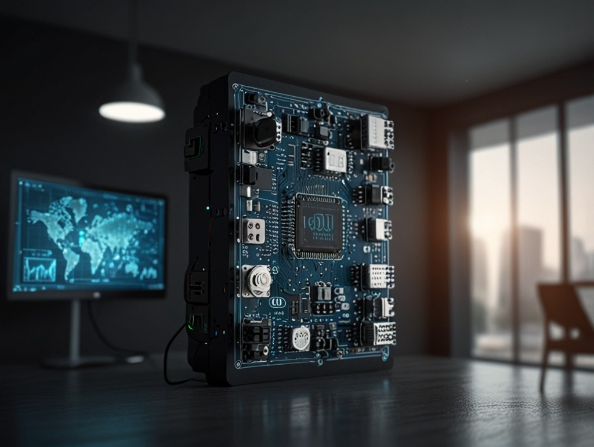
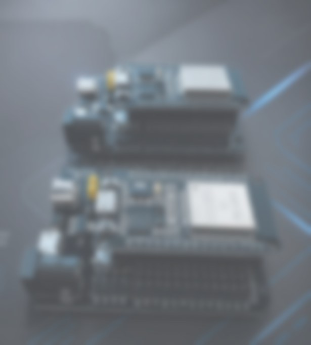

Engenharia
Planejamento de projetos, metrologia e melhoria de desempenho. A solução nasce do fluxo real, com responsáveis, etapas e critério de aceite.
Engenharia · Tecnologia · Treinamento
A SEPIEM desenha sistemas para a indústria, conecta equipamentos com IoT e automação e prepara as pessoas que vão usar essa tecnologia. O mesmo grupo mantém produtos digitais próprios, como o Farol dos Concursos.
Projeto, software e formação no mesmo critério: o que entra em uso precisa ser claro para quem opera.
Propósito
SEPIEM é Serviço, Pesquisa e Inovação em Engenharia e Metrologia. Atuamos com empresas e organizações que precisam organizar a engenharia, tirar a digitação repetida do caminho e deixar a equipe apta a sustentar o que foi construído.
Planejamento de projetos, metrologia e melhoria de desempenho. A solução nasce do fluxo real, com responsáveis, etapas e critério de aceite.
Software sob medida, IoT e automação para indústria e outros clientes. Os dados circulam entre o que a empresa já usa e o que precisa passar a enxergar.
Formação de quem vai operar, medir e evoluir o sistema. Tecnologia sem gente preparada volta a ser planilha paralela.
Indústria
Pedidos, produção, manutenção e medições raramente cabem num pacote fechado. A SEPIEM constrói o software a partir da operação: o que já funciona permanece, o que se repete vira fluxo, e a equipe acompanha pendência, responsável e status no mesmo lugar.
O que construímos
Cada frente abaixo pode andar sozinha ou compor um projeto único. O recorte sai da conversa inicial, com escopo e prioridade visíveis antes da construção.
Projetos, inspeções e rotinas de metrologia organizados para quem precisa decidir com registro, e não com memória de corredor.
Aplicações sob medida para operação, consulta e acompanhamento. O código fica a serviço do processo, com documentação para a continuidade.

Automação e supervisão para reduzir repasse manual entre máquina, planilha e decisão.
IoT
Sensores, placas e redes sem fio só valem quando a leitura chega para quem precisa agir. Desenvolvemos soluções de internet das coisas para monitoramento, automação e integração com o software de gestão.

Como trabalhamos
O projeto anda em etapas curtas. A prioridade da próxima etapa sai do uso real, não de uma lista fechada no primeiro dia.
Mapeamos o gargalo, os sistemas atuais e o que precisa mudar primeiro.
Fluxos, telas e critérios de aceite alinhados com quem vive a rotina.
Desenvolvimento, integração e revisão das entregas com a equipe do cliente.
Publicação, treinamento e ajustes guiados pelo que acontece depois da entrega.
Marca do grupo
Um produto da SEPIEM para quem acompanha concursos públicos. O portal reúne editais, vagas, salários e atualizações, com filtros por estado, escolaridade, órgão e status.
Quem conduz
A SEPIEM é uma sociedade limitada, fundada em 2021 no Rio de Janeiro. Os sócios respondem pela direção da engenharia, da tecnologia e dos produtos do grupo.
Sócio-administrador
Sócio · tecnologia e inovação
Sócio
Sócio
Contato
A primeira mensagem serve para entender o cenário: indústria, automação, IoT, treinamento ou um produto digital. Respondemos pelo e-mail associado a esta página.
SEPIEM · Serviço, Pesquisa e Inovação em Engenharia e Metrologia Ltda.
Rio de Janeiro/RJ · CNPJ 42.695.934/0001-35